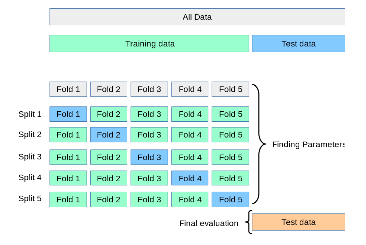
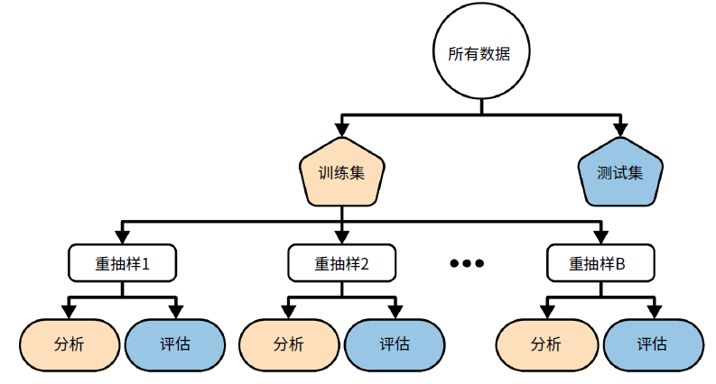

5 常见的数据划分方法
通常大家在做临床预测模型或者机器学习时，首先就是要划分数据，比如训练集/测试集划分、内部验证/外部验证，这些都属于重抽样技术。
重抽样技术大家应该都不陌生，比如常用的K折交叉验证、bootstrap、训练集/测试集划分，等，都属于重抽样技术。
它的基本思想是：对于一个数据集，先用其中一部分训练模型，然后用剩余的数据评估模型表现，这一过程会重复进行多次，最后对多个结果进行归纳汇总。
使用重抽样技术有助于模型更好地“认识理解”数据，从而得到更加稳健的结果。只使用一个结果可能会得到偏差较大的结果，那我使用100次的结果是不是就更加稳健了呢？得到极端结果的可能性是不是就更小了呢？
因为重抽样过程是随机的，它每次都会随机地从整个数据中抽取一部分，给模型学习，所以每次抽取的数据都不一样（既然是随机的，那也有可能一样），这样就让模型有机会认识全部的数据，从而提高模型稳定性。
在临床预测模型领域大家经常听到内部验证、外部验证这种说法，其实很好理解。对于数据集A，我把它分成A1和A2两份，A1这部分数据用于训练模型，A2这部分数据用于评估模型表现，用来评估模型表现的这部分A2数据就是内部验证，因为虽然我们把A分成了A1和A2两部分，但是这两部分本质上还是一个来源的，所以这是内部验证；假如此时我找来另一份数据集B，在数据集B上再次评估模型表现，那数据集B就是外部验证。
内外部验证其实是非常简单的概念，但是统计学家总是喜欢搞这些高大上的概念。我再推荐冯国双老师的一篇文章，大家可以阅读一下：你以为的“外部验证”，其实只是内部验证
重抽样的方法有很多种，除了大家常见的K折交叉验证、bootstrap，还有蒙特卡洛交叉验证、留一法交叉验证等。
如何选择合适的重抽样方法呢？这个一定要和你的数据结合讨论，没有金标准！如果你是一个精通机器学习的人，那你肯定不会有这样的问题，所以说到底，这都是机器学习中的问题，一个临床的医务工作者不懂这些很正常。我会在文末给出一些方法选择建议供大家参考。
5.1 留出法(holdout)
大家最常使用的，把数据集随机划分为训练集(train)/测试集(test)的做法就是holdout，其中训练集用于建模，测试集用于评估模型表现。测试集有时也被称为验证集(validation)。
如果你的数据样本量足够大，大到几乎不可能产生错误的结果，那你可以大胆放心用这种方法，否则一般都不推荐只使用这种方法。
通常的做法是把数据集划分为训练集/测试集后，在训练集中建立模型，当确定最终的模型后，我们会让模型对测试集进行预测，以评估模型最终的表现。
5.2 交叉验证(cross validation)
交叉验证，意思就是一份数据既用作训练，也用作验证，互相交叉，主要有以下几种：
K折交叉验证(K fold cross validation)，就是把数据集随机分为K个样本量基本相同的子数据集。比如5折交叉验证，就是把数据集分为5个子集（比如分成A,B,C,D,E,5份），在建模时，首先会使用其中A,B,C,D,4份数据进行建模，然后用剩下的E数据评估模型表现，接下来使用A,B,C,E，4份数据建模，用剩下的D评估模型表现。这样依次进行5个循环，每份数据都会用来评估模型表现。这样就会得到5个模型，就会有5个结果，最后将得到的5个模型表现结果进行汇总作为最终的结果。
下面是一个5折交叉验证的示意图，我们把所有数据分为训练集和测试集，然后在训练集建立模型，建立模型时，对训练集使用了5折交叉验证的方法：

留一交叉验证(LOOCV, leave one out cross validation)，是K折交叉验证的特例。每次都只留1个样本用于评估模型表现，所以这里的K其实就等于样本量，每一个样本都会被用来评估模型表现。
重复交叉验证(repeated cross validation)，也是K折交叉验证的扩展版本，比如，重复10次的5折交叉验证，就是把5折交叉验证这个过程重复10遍。
蒙特卡洛交叉验证(Monte Carlo cross validation)，也是交叉验证的一个变种。留出法是将数据集划分1次，而蒙特卡洛交叉验证就是将留出法进行多次。
5.3 bootstrap
自助法，即有放回的随机抽样法。具体做法如下：
比如，一个数据集有100个样本，每次随机抽取1个，然后放回去，再随机抽取1个，再放回去，这样的过程重复100次，就得到了一个和原数据集样本量相等的抽样数据集，这个抽样数据集就叫做自助集或自助样本。
由于每次都是有放回然后再随机抽取，所以一个自助集中可能有多个同一样本！所以就有可能在100次随机抽取中，有一些没被抽中过的样本，这些样本就被称为袋外样本(out-of-bag，OOB)，其中被抽中的样本(也就是自助集)用于训练模型，袋外样本用来评估模型表现。
如果设置bootstrap的次数是10，就是抽取10个自助集，10个袋外样本，在每个自助集中训练一个模型，并在相应的袋外样本中评估模型，这样就会得到10个模型表现，对它们取平均值，就是最终的模型表现。
5.4 其他方法
除了以上方法，其实还有非常多没有介绍，比如在mlr3中经常使用的嵌套重抽样，这些大家感兴趣可以自行了解。
5.5 内部验证/外部验证
临床预测模型中会有内部验证/外部验证的说法，内部验证又叫内部重抽样，其实没有任何特殊的地方，只是换个说法而已。
一个数据集被随机划分为训练集和测试集，在训练集建立模型时，我们可能会对训练集使用K折交叉验证或者bootstrap等方法，这样可以使我们的模型更加稳健，避免出现极坏或者极好的结果。在训练集中使用K折交叉验证或者bootstrap等方法，就被叫做内部验证或者内部重抽样。在测试集（指建模时未使用过的数据）测试模型的表现，就叫做外部验证。
下图是《R语言整洁建模》中的典型数据划分方法示意图，非常贴合临床预测模型的数据划分方法。

首先我们会把所有数据划分为训练集和测试集，然后在训练集中建立模型，这个过程会对训练集使用另一种重抽样方法（比如交叉验证或者bootstrap等），每一次重抽样我们都会使用其中一部分数据用于拟合模型，另一部分数据用于评估模型，用于拟合模型的这部分数据被称为分析集，用于评估模型的数据被称为评估集。
5.6 重抽样的目的
经常有粉丝问我：为什么我用了各种方法，10折交叉验证、10折重复交叉验证、自助法，都用过了，为什么最后模型的表现还是很差？
看到类似的问题，我想这部分朋友可能把重抽样的目的搞错了，重抽样的目的不是为了提高模型表现，重抽样也确实不能提高模型表现！开头我已说过，重抽样技术是为了让模型更好的认识数据而已，这样能够得到更加稳健、无偏的结果，但是对于提高模型表现没有直接的影响哦~
你可以这么理解，如果你不重抽样，可能某一次结果的AUC是0.9，再做一次可能就变成0.5了，而你重抽样10次，得到的结果是10次的平均，这样的结果很明显是更加稳健的、误差小的。
模型表现好不好首先是数据原因，一个牛逼的数据不需要复杂的模型也能有很好的结果，数据预处理对数据影响很大，大家可以参考下一章内容。另外还和模型本身的性质有关，比如模型的超参数、模型本身的上限等，这些都会影响模型的表现。
5.7 为什么要单独划分
通常我们建立模型时，会把数据集A划分为A1和A2两份，A1用来训练模型，A2用来测试模型，在训练模型的过程中，完全不用使用到A2这部分数据。有些人不理解，把这种方法和嵌套重抽样混为一谈。其实这两个有着本质的区别。
嵌套重抽样是在训练模型时使用的，把两份数据集全都用到了，而且两份数据集都会再叠加其他重抽样方法。
但我们划分数据的目的是什么呢？我们是为了测试最终的模型表现。临床问题数据很珍贵，通常都只有1份，这种情况下我把这份数据全都用于训练模型，那我用什么测试训练出来的模型好坏呢？有的人喜欢把训练好的模型作用于用来训练模型的数据上，发现结果竟然很好，这样是不对的，这叫数据泄露，你的数据模型已经学习过了，这不是作弊吗？这样的模型结果能说明什么问题呢？
所以一开始把数据就划分为2份是一个很好的解决方法。如果你有很多个数据集，你完全可以在其中1个数据集中使用各种方法建模。比如，你的临床试验有多个分中心，你完全可以使用其中1个或几个中心的数据建立模型，然后在其余中心的数据中评估最终的模型。
5.8 方法选择建议
以上就是一些常见的重抽样方法，可以看到每种方法都强调一个问题，那就是随机！，只有随机，才能保证模型学习到这个数据集中的更多信息，才能获得稳健的模型表现！
以下是一些方法选择建议：
- 没有哪一种方法好，哪一种方法不好！！只有合不合适，没有好不好！
- 如果样本量较小，建议选择重复10折交叉验证；
- 如果样本量足够大，比如几万，几十万这种，随便选，都可以；
- 如果目的不是得到最好的模型表现，而是为了在不同模型间进行选择，建议使用bootstrap；
- 如果还不知道怎么选，建议都试一试，喜欢哪个选哪个